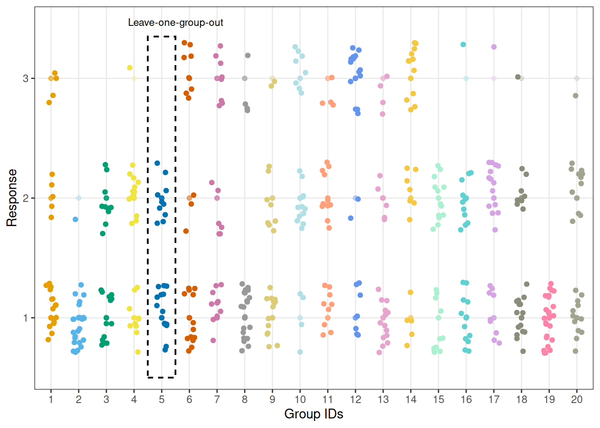

![]()
How can we approximate LOGO-CV reliably beyond 2D varying coefficients and for different model types?
Code
# load packages
library(here)
library(dplyr)
library(tidyr)
library(ggplot2)
library(parallel)
library(patchwork)
library(brms)
library(loo)
library(bridgestan)
library(aghq)
# set seed
set.seed(424242)
# cores
numberOfCores <- detectCores() - 1
# plot theme
theme_set(theme_bw())Intro
Leave-one-group-out cross-validation is useful for estimating the expected predictive performance for new exchangeable groups. Commonly used cross-validation approximations via importance sampling are likely to fail if there are group-specific coefficients, as the posterior can change too much when all the group-specific observations are removed, leading to unreliable estimates. Pareto-smoothed importance sampling (PSIS) (Vehtari et al. 2024) alleviates some of these issues, but it has previously been observed that PSIS-LOO-CV can provide unreliable results when evaluating hierarchical models with a varying effect on the level of each observation. Integration over the target density has been investigated in the context of importance sampling and Bayesian LOO-CV as a means to stabilise approximations.
For instance, Vehtari et al. (2016), and Merkle, Furr, and Rabe-Hesketh (2019) present different approaches for integrating out latent model parameters to achieve better approximations for evaluating predictive performance. In case of a single coefficient per group, numerical 1D quadrature has been used successfully to improve the performance of the importance sampling cross-validation (see examples, e.g., in Aki Vehtari’s cross-validation demo using the roaches dataset or Riha et al. (2024)). We discuss alternative approaches to integrate out the group-specific coefficients, which scale well beyond 1D and work well with non-normal latent distributions. Our goal is to make the approach as automated as possible in brms (Bürkner 2017), a widely used package for Bayesian data analysis using the probabilistic programming language (Stan Development Team 2025).
Dataset verbAgg
The VerbAgg dataset available in the lme4 package (Bates et al. 2015) contains item responses to a questionnaire on verbal aggression with a subject identifier VerbAgg$id for each of the 316 participants with 24 observations each. The outcome of interest, VerbAgg$resp, is the subject’s response to the item as an ordered factor with levels no < perhaps < yes. To speed up the computation, we select only the first 20 participants for now.
data("VerbAgg", package = "lme4")
# make sure that no response levels can be dropped later on
VerbAgg$r3 <- as.numeric(VerbAgg$resp)
# filter for 20 participants for illustration purposes
VerbAgg_reduced <- VerbAgg |>
filter(id %in% 1:20) |>
mutate(id = factor(id))Illustration: Why is importance sampling hard for LOGO-CV?
To illustrate that importance sampling can fail when target and proposal differ a lot, we use a simple example with one group-level parameter but more than one observation in each group by looking at a simpler version of the model that we fitted above. We compare the results for the full-data posterior, the leave-one-out posterior and the leave-one-group-out posterior.
We build an ordinal cumulative model using family = cumulative() in brms::brm() and, for simplicity, only include a varying intercept on the level of each group of observations for each individual.
# full-data posterior
fit_cumulative_simple <- brm(
r3 ~ Gender + btype + mode + situ + (1 | id),
data = VerbAgg_reduced,
family = cumulative(),
chains = 4, cores = 4, warmup = 1000, iter = 2000,
file = here::here("data", "approx-logo-cv", "fit_verbagg_cumulative_simple"),
init = 0 # all parameters are initialised to zero on the unconstrained space
)
posterior_draws <- posterior::as_draws_df(fit_cumulative_simple)Now, we remove one observation to obtain the LOO posterior.
# LOO posterior
row_id <- 5
VerbAgg_reduced_loo <- VerbAgg_reduced[-row_id, ]
fit_cumulative_simple_loo <- brm(
r3 ~ Gender + btype + mode + situ + (1 | id),
data = VerbAgg_reduced_loo,
family = cumulative(),
chains = 4, cores = 4, warmup = 1000, iter = 2000,
file = here::here("data", "approx-logo-cv", "fit_verbagg_cumulative_simple_loo"),
init = 0 # all parameters are initialised to zero on the unconstrained space
)
posterior_draws_loo <- posterior::as_draws_df(fit_cumulative_simple_loo)To obtain the LOGO posterior, we fit a model without the data for grouping level 5 and use the posterior draws for the standard deviation of the varying intercept to obtain LOGO posterior samples.
# LOGO posterior
leave_out_id <- 5
VerbAgg_reduced_logo <- filter(VerbAgg_reduced, id != leave_out_id)
# fit model without one of the groups
fit_cumulative_simple_logo <- brm(
r3 ~ Gender + btype + mode + situ + (1 | id),
data = VerbAgg_reduced_logo,
family = cumulative(),
chains = 4, cores = 4, warmup = 1000, iter = 2000,
file = here::here("data", "approx-logo-cv", "fit_verbagg_cumulative_simple_logo"),
init = 0 # all parameters are initialised to zero on the unconstrained space
)
# extract posterior samples for varying intercept sd
posterior_draws_logo <- posterior::as_draws_df(fit_cumulative_simple_logo)
sd_draws <- posterior_draws_logo[, "sd_id__Intercept"]$sd_id__InterceptWarning: Dropping 'draws_df' class as required metadata was removed.Since we assume Normal priors, we can obtain the LOGO posterior results via rnorm(brms::ndraws(fit_cumulative_simple_logo), 0, sd = sd_draws). We store all the information in one data frame for easier plotting later on.
# Create df for plotting
name_coeff <- paste0("r_id[", leave_out_id, ",Intercept]")
df_plot_posteriors_rs <- as.data.frame(rbind(
tibble(r_values = posterior_draws[, "r_id[5,Intercept]"]$`r_id[5,Intercept]`,
posterior_type = rep("full-data posterior", length = NROW(posterior_draws))),
tibble(r_values = posterior_draws_loo[, "r_id[5,Intercept]"]$`r_id[5,Intercept]`,
posterior_type = rep("LOO posterior", length = NROW(posterior_draws_loo))),
tibble(r_values = rnorm(brms::ndraws(fit_cumulative_simple_logo), 0, sd = sd_draws),
posterior_type = rep("LOGO posterior", length = brms::ndraws(fit_cumulative_simple_logo)))
)) |>
mutate(posterior_type = factor(posterior_type, levels = c("full-data posterior", "LOO posterior", "LOGO posterior")))Warning: Dropping 'draws_df' class as required metadata was removed.
Warning: Dropping 'draws_df' class as required metadata was removed.We visualise the three different posterior results, and observe that while the full-data posterior and the LOO posterior are rather close to one another, the LOGO posterior differs considerable from the two.
# Visualise
custom_colors <- c("#8B8D7A","#D55E00","#0072B2")
plot_posterior_rs_comparison <- ggplot(data = df_plot_posteriors_rs, aes(x = r_values, color = posterior_type, fill = NULL)) +
geom_density(linewidth = 2) +
geom_vline(aes(xintercept = 0), size = 0.7, linetype = "dashed") +
scale_color_manual(values = custom_colors) +
xlab("Posterior results for rid[5,Intercept]") +
theme_classic() +
theme(
legend.position = "inside",
legend.position.inside = c(0.8,0.7),
legend.title = element_blank(),
axis.title.y = element_blank(),
axis.text.y = element_blank(),
axis.ticks.y = element_blank(),
axis.line.y = element_blank()
)Warning: Using `size` aesthetic for lines was deprecated in ggplot2 3.4.0.
ℹ Please use `linewidth` instead.plot_posterior_rs_comparisonExample: Analysing repsonses to a verbal aggression questionnaire
We now assume a more complex model with a varying effect based on the subject identifier id as well as a varying slope for the behaviour type btype (a factor with three levels curse, scold, shout).
fit_cumulative <- brm(
r3 ~ Gender + btype + mode + situ + (btype || id),
data = VerbAgg_reduced,
family = cumulative(),
chains = 4,
cores = 4,
iter = 2000,
file = here::here("data", "approx-logo-cv", "fit_verbagg_cumulative"),
init = 0 # all parameters initialised to zero on unconstrained space
)Evaluating predictions for a new observation with PSIS-LOO-CV
We can use PSIS-LOO-CV to evaluate the predictive performance of our model, but this only allows us to evaluate the predictive abilities for individual observations.
loo_psis <- loo(fit_cumulative)
loo_psis
Computed from 4000 by 480 log-likelihood matrix.
Estimate SE
elpd_loo -376.0 15.5
p_loo 44.7 2.7
looic 752.0 31.0
------
MCSE of elpd_loo is 0.1.
MCSE and ESS estimates assume MCMC draws (r_eff in [0.6, 1.6]).
All Pareto k estimates are good (k < 0.7).
See help('pareto-k-diagnostic') for details.Evaluating predictions for a new individual
We can visualise the responses for all 20 participants and highlight that, in our modelling scenario, leaving one individual out means leaving one group of observations out.
Code
specified_id <- 5
max_resp <- 3
y_lower_bound <- 0.5
y_upper_bound <- 3.35
custom_colors <- c(
"#E69F00", "#56B4E9", "#009E73", "#F0E442", "#0072B2",
"#D55E00", "#CC79A7", "#999999", "#DDCC77", "#B0E0E6",
"#FFA07A", "#6495ED", "#E6A5CC", "#F4C842", "#AAF0D1",
"#61D0D1", "#D4A5E2", "#8B8D7A", "#FC84A9", "#A3A48F"
)
plot_data_with_group <- VerbAgg_reduced |>
ggplot(aes(x = id, y = factor(r3), color = id)) +
geom_point(alpha = 0.2) +
geom_jitter(width = 0.2, height = 0.3) +
geom_rect(aes(xmin = specified_id - 0.5,
xmax = specified_id + 0.5,
ymin = y_lower_bound,
ymax = y_upper_bound),
fill = NA, color = "black", linetype = "dashed") +
annotate("text", x = specified_id + 0.5, y = y_upper_bound + 0.12,
label = "Leave-one-group-out", size = 3, hjust = 0.5) +
scale_color_manual(values = custom_colors) +
theme(legend.position = "none") +
xlab("Group IDs") +
ylab("Response")
plot_data_with_group
Brute-force LOGO-CV
First, we use k-fold CV with k equal to the number of groups in our data to compute the leave-one-group-out predictive distributions. We can use brms::kfold() to perform brute-force LOGO-CV. In particular, if the argument folds is NULL, but we specify group = "id", the data is split up into subsets, each time omitting all observations of one of the levels of VerbAgg::id, while ignoring argument K. To perform brute-force LOGO-CV, we need to evaluate the likelihood for each group. In our case, this means that we need to refit the model 316 times.
path_logo_brute <- here::here("data", "approx-logo-cv", "logo_brute_verbagg.rds")
if (file.exists(path_logo_brute)) {
logo_brute <- readRDS(path_logo_brute)
} else {
logo_brute <- kfold(
fit_cumulative,
group = "id",
joint = TRUE,
chains = 1,
init = 0)
}logo_brute
Based on 20-fold cross-validation.
Estimate SE
elpd_kfold -401.4 27.1
p_kfold 64.3 4.8
kfoldic 802.9 54.2PSIS-LOGO-CV
Now, we compute the leave-one-group-out predictive distributions using Pareto-smoothed importance sampling (PSIS).
# matrix of pointwise log likelihood values
log_lik_pointwise <- log_lik(fit_cumulative)
# 20 individuals answered 24 question items each
gids <- rep(1:20, times = 24)
# grouped log likelihood values
log_lik_g <- t(apply(log_lik_pointwise, 1, function(row) {
tapply(row, INDEX = gids, FUN = sum)
}))
logo_psis <- loo(log_lik_g)Warning: Some Pareto k diagnostic values are too high. See help('pareto-k-diagnostic') for details.# compute log ratios from grouped log likelihood values
log_ratios <- -1 * log_lik_g
r_eff <- relative_eff(
exp(-log_ratios), # exp(-log_ratios) is the reciprocal of the importance ratios
chain_id = rep(1:nchains(fit_cumulative), each = ndraws(fit_cumulative) / nchains(fit_cumulative)))
psis_logo <- psis(log_ratios, r_eff = r_eff)Warning: Some Pareto k diagnostic values are too high. See help('pareto-k-diagnostic') for details.psis_logoComputed from 4000 by 20 log-weights matrix.
MCSE and ESS estimates assume MCMC draws (r_eff in [0.6, 1.1]).
Pareto k diagnostic values:
Count Pct. Min. ESS
(-Inf, 0.7] (good) 0 0.0% <NA>
(0.7, 1] (bad) 10 50.0% <NA>
(1, Inf) (very bad) 10 50.0% <NA>
See help('pareto-k-diagnostic') for details.We can visualise the Pareto \(\hat{k}\) values which are the estimated shape parameters of the generalised Pareto distribution that is fitted to the tails of the distribution of importance weights. Whenever we observe values above the threshold \(0.7\), this informs us that the estimates obtained with Pareto-smoothed importance sampling are not reliable (see, e.g., Vehtari et al. (2024)).
Code
plot_data <- data.frame(
pareto_k_hats = psis_logo$diagnostics$pareto_k,
group_ids = seq_along(psis_logo$diagnostics$pareto_k)
)
plot_pareto_k_psis_logo <-
ggplot(data = plot_data, aes(x = group_ids, y = pareto_k_hats)) +
geom_point(shape = 3, color = "darkblue") +
geom_hline(yintercept = 0.7, linetype = "dashed", color = "darkred") +
scale_y_continuous(breaks = seq(0, max(plot_data$pareto_k_hats)+0.1, by = 0.1), limits = c(0, 1.4)) +
ylab("") +
xlab("Group IDs") +
ggtitle("Unreliable results with PSIS-LOGO-CV")
plot_pareto_k_psis_logoCode
plot_data_2 <- data.frame(
pareto_k_hats = logo_psis$diagnostics$pareto_k,
group_ids = seq_along(logo_psis$diagnostics$pareto_k)
)
plot_pareto_k_logo_psis <-
ggplot(data = plot_data_2, aes(x = group_ids, y = pareto_k_hats)) +
geom_point(shape = 3, color = "darkblue") +
geom_hline(yintercept = 0.7, linetype = "dashed", color = "darkred") +
scale_y_continuous(breaks = seq(0, max(plot_data$pareto_k_hats)+0.1, by = 0.1), limits = c(0, 1.4)) +
ylab("") +
xlab("Group IDs") +
ggtitle("Unreliable results with PSIS-LOGO-CV")
plot_pareto_k_logo_psisPlain PSIS-LOGO-CV has issues. We need to stabilise the importance weights by modifying the log-likelihood computation using, for example, integration.
Approximate LOGO-CV
First, we need to extract information from the brmsfit object and set up an empty fit object that will be updated later on.
The below custom function setup_fun() stores the linear predictor excluding the varying effects, extracts the relevant posterior draws for the varying effects, and creates an empty brmsfit object that will be updated when performing approximate LOGO-CV. Unfold the below code chunk to see the details.
Code
setup_fun <- function(fit_object, group_name, thin_draws_by = 1){
stopifnot(is.brmsfit(fit_object))
# extract posterior draws without group-level effects
draws_linpred <- brms::posterior_linpred(fit_object, re_formula = NA)
# extract sd terms
draws_sd <- as.matrix(fit_object, variable = paste0("^sd_", group_name, "__"), regex = TRUE)
# extract intercept terms
draws_int <- as.matrix(fit_object, variable = "^b_Intercept", regex = TRUE)
ids_draws <- seq(1, posterior::ndraws(fit_object), by = thin_draws_by)
# extract all group ids
ids_groups <- unique(fit_object$data[group_name])[,1]
# create list of all obs per group
ids_per_group <- lapply(ids_groups, \(i){
which(fit_object$data[group_name][,1] == i)
})
# create initial placeholder for group-specific marginal df
outcome <- all.vars(fit_object$formula$formula)[1]
data_marg_init <- fit_object$data |>
# select only one subject/group for marginal df
filter(get({{group_name}}) == unique(get({{group_name}}))[1]) |>
mutate(plin = 0)
# get model formula for empty fit
varying_part <- regmatches(fit_object$formula$formula, regexpr("+ \\((.*) (.*)\\)", fit_object$formula$formula))
if (fit_object$family$family == "cumulative"){
outcome_levels <- as.numeric(length(unique(fit_object$data[,outcome])))
thresholds <- outcome_levels - 1
empty_model_formula <- brms::brmsformula(formula = glue::glue("{outcome} | thres({thresholds}) ~ 1 + offset(plin) + {varying_part}"))
} else {
empty_model_formula <- brms::brmsformula(formula = glue::glue("{outcome} ~ 0 + offset(plin) + {varying_part}"))
}
# placeholder for prior for varying effects set to constant
constant_prior <-
prior(constant(tau, broadcast = FALSE), class = "sd", group = "id") +
prior(constant(alpha, broadcast = FALSE), class = "Intercept")
stanvars <-
stanvar(rep(1.0, ncol(draws_sd)), name = "tau") +
stanvar(rep(1.0, ncol(draws_int)), name = "alpha")
# create empty fit using constant prior and stanvars
fit_marg_empty <- brms::brm(formula = empty_model_formula,
data = data_marg_init,
family = fit_object$family,
prior = constant_prior,
stanvars = stanvars,
save_pars = save_pars(all = TRUE),
seed = 424242,
chains = 0)
# return setup
list(data_marg_init = data_marg_init,
fit_object = fit_object,
empty_model_formula = empty_model_formula,
fit_marg_empty = fit_marg_empty,
draws_linpred = draws_linpred,
draws_sd = draws_sd,
draws_int = draws_int,
ids_groups = ids_groups,
ids_per_group = ids_per_group,
ids_draws = ids_draws)
}Now, we use our custom function to set everything up for the next steps:
setup <- setup_fun(fit_object = fit_cumulative, group_name = "id") Compiling Stan program...Start samplingthe number of chains is less than 1; sampling not doneAdditionally, we will also separately store the group name, the group ids and the draw ids for the fit object:
group_name <- "id"
group_ids <- unique(fit_cumulative$data[group_name])[,1]
draw_ids <- seq(1, ndraws(fit_cumulative))Bridgesampling + PSIS-LOGO-CV
We first set up a helper function that takes in our previously generated setup for our fit object fit_cumulative and returns one log likelihood value.
bridgesampling_fun <- function(setup, group_name, group_id, draw_id){
# extract what is needed from setup
fit_object <- setup$fit_object
fit_marg_empty <- setup$fit_marg_empty
ids_one_group <- setup$ids_per_group[[group_id]]
draw_sd <- setup$draws_sd[draw_id,]
draw_int <- setup$draws_int[draw_id,]
draw_linpred <- setup$draws_linpred[draw_id, ids_one_group]
# data input for updating the empty marginal fit object
data_marg <- fit_object$data |>
filter(id == group_id) |>
mutate(plin = draw_linpred)
# update empty marginal fit object
fit_marg <- update(
fit_marg_empty,
newdata = data_marg,
stanvars = stanvar(draw_sd, name = "tau") +
stanvar(draw_int, name = "alpha"),
chains = 1,
warmup = 200,
iter = 1000,
silent = 2,
init = 0,
refresh = 0
)
# set seed again for bridge sampling
set.seed(424242)
log_lik_marg_one_group_one_draw <- brms::bridge_sampler(fit_marg, silent = TRUE, use_neff = FALSE)$logml
return(log_lik_marg_one_group_one_draw)
}Now, we apply our helper function for bridge sampling in a loop over group levels and draws to approximate the grouped log likelihood values using bridge sampling:
path_logo_bridge_parallel <- here::here("data", "approx-logo-cv", "logo_bridge_verbagg_parallel.rds")
if (file.exists(path_logo_bridge_parallel)) {
logo_bridge_parallel_groups <- readRDS(path_logo_bridge_parallel)
} else {
log_lik_grouped_bridge_parallel <-
lapply(group_ids, \(g_id){
mclapply(draw_ids, \(d_id, mc.cores = numberOfCores){
bridgesampling_fun(setup, group_name, g_id, d_id)
})
})
# format as array ####
number_of_chains <- 1
log_lik_array_bridge_parallel_groups <- array(
unlist(log_lik_grouped_bridge_parallel),
dim = c(length(draw_ids), number_of_chains, length(group_ids)))
# set dimnames of array ####
dimnames(log_lik_array_bridge_parallel_groups) <- list(
iteration = seq(length(draw_ids)),
chain = seq(number_of_chains),
variable = paste0("log_lik[", group_ids, "]"))
# convert into draws array ####
log_lik_array_bridge_parallel_groups <-
posterior::as_draws(log_lik_array_bridge_parallel_groups)
# LOO with log likelihood by groups ####
logo_bridge_parallel_groups <- loo(log_lik_array_bridge_parallel_groups, r_eff = NA)
saveRDS(logo_bridge_parallel_groups, path_logo_bridge_parallel)
}logo_bridge_parallel_groups
Computed from 4000 by 20 log-likelihood matrix.
Estimate SE
elpd_loo -400.6 27.2
p_loo 18.0 2.2
looic 801.3 54.4
------
MCSE of elpd_loo is 0.1.
MCSE and ESS estimates assume independent draws (r_eff=1).
All Pareto k estimates are good (k < 0.7).
See help('pareto-k-diagnostic') for details.We visualise the Pareto-\(\hat{k}\) values, and observe that, in contrast to the results obtained with PSIS-LOGO-CV, they are all below the threshold of \(0.7\), that is, the estimates are all reliable.
Code
plot_data_pareto_k_bridge <- data.frame(
pareto_k_hats = logo_bridge_parallel_groups$diagnostics$pareto_k,
group_ids = seq_along(logo_bridge_parallel_groups$diagnostics$pareto_k)
)
plot_poster_pareto_k_bridge <-
ggplot(data = plot_data_pareto_k_bridge, aes(x = group_ids, y = pareto_k_hats)) +
geom_point(shape = 3, color = "darkblue") +
geom_hline(yintercept = 0.7, linetype = "dashed", color = "darkred") +
scale_y_continuous(breaks = seq(0, 1.4, by = 0.1), limits = c(0, 1.4)) +
ylab("") +
xlab("Group IDs") +
ggtitle("Bridge sampling + PSIS-LOGO-CV")
plot_poster_pareto_k_bridgeLaplace approximation + PSIS-LOGO-CV
We first set up a helper function that takes in our previously generated setup for our fit object fit_cumulative and returns a single entry of the log likelihood marginal using Laplace approximation.
## LOGO-CV with Laplace approximation
laplace_fun <- function(setup, group_name, group_id, draw_id){
# extract what is needed from setup
fit_object <- setup$fit_object
empty_model_formula <- setup$empty_model_formula
fit_marg_empty <- setup$fit_marg_empty
ids_one_group <- setup$ids_per_group[[group_id]]
draw_sd <- setup$draws_sd[draw_id,]
draw_int <- setup$draws_int[draw_id,]
draw_linpred <- setup$draws_linpred[draw_id, ids_one_group]
# compile empty model
bsso_marg <- bridgestan::compile_model(cmdstanr::write_stan_file(stancode(fit_marg_empty)))
# prepare data
data_one_group <- fit_object$data |> filter(get({{group_name}}) == group_id)
data_marg <- data_one_group |> mutate(plin = draw_linpred)
data_for_stan <- make_standata(
empty_model_formula,
data = data_marg,
family = fit_object$family,
prior = prior(constant(tau, broadcast = FALSE), "sd", group = "id") +
prior(constant(alpha, broadcast = FALSE), "Intercept"),
stanvars = stanvar(1.0, name = "tau") +
stanvar(1.0, name = "alpha"))
# update draw specific part of the data list
data_for_stan$offsets <- array(draw_linpred)
data_for_stan$tau <- draw_sd
data_for_stan$alpha <- draw_int
# instantiate the model with updated data
suppressWarnings(bsm <- StanModel$new(lib = bsso_marg,
data = to_stan_json(data_for_stan),
seed = draw_id))
# log-density, gradient, and hessian functions
ffs <- list(fn=bsm$log_density,
gr=\(x) {bsm$log_density_gradient(x)$gradient},
he=\(x) {bsm$log_density_hessian(x)$hessian})
# initial unconstrained parameter values for optimization
th0 <- rep(0,3)
# Laplace approximation ####
aghq_laplace_marg <- aghq::laplace_approximation(ffs, startingvalue = th0)
log_lik_marg_one_group_one_draw <- get_log_normconst(aghq_laplace_marg)
return(log_lik_marg_one_group_one_draw)
}To instantiate the model with updated data in our above helper function, we need an additional helper function that returns the JSON literal of our Stan model. We use a modified version of cmdstanr::write_stan_json from the cmdstanr package (Gabry et al. 2025).
Code
# helper function to return JSON literal modified from cmdstanr::write_stan_json
to_stan_json <- function(data, always_decimal = FALSE) {
if (!is.list(data)) {
stop("'data' must be a list.", call. = FALSE)
}
data_names <- names(data)
if (length(data) > 0 &&
(length(data_names) == 0 ||
length(data_names) != sum(nzchar(data_names)))) {
stop("All elements in 'data' list must have names.", call. = FALSE)
}
if (anyDuplicated(data_names) != 0) {
stop("Duplicate names not allowed in 'data'.", call. = FALSE)
}
for (var_name in data_names) {
var <- data[[var_name]]
if (!(is.numeric(var) || is.factor(var) || is.logical(var) ||
is.data.frame(var) || is.list(var))) {
stop("Variable '", var_name, "' is of invalid type.", call. = FALSE)
}
if (anyNA(var)) {
stop("Variable '", var_name, "' has NA values.", call. = FALSE)
}
if (is.table(var)) {
var <- unclass(var)
} else if (is.logical(var)) {
mode(var) <- "integer"
} else if (is.data.frame(var)) {
var <- data.matrix(var)
} else if (is.list(var)) {
var <- list_to_array(var, var_name)
}
data[[var_name]] <- var
}
# unboxing variables (N = 10 is stored as N : 10, not N: [10])
jsonlite::toJSON(
data,
auto_unbox = TRUE,
factor = "integer",
always_decimal = always_decimal,
digits = NA,
pretty = TRUE
)
}Now, we loop over grouping levels and draws with our helper function laplace_fun() defined above to obtain estimates of our log likelihood values:
path_logo_laplace_parallel <- here::here("data", "approx-logo-cv", "logo_laplace_verbagg_parallel.rds")
if (file.exists(path_logo_laplace_parallel)) {
logo_laplace_parallel_groups <- readRDS(path_logo_laplace_parallel)
} else {
log_lik_grouped_laplace_parallel <-
lapply(group_ids, \(g_id){
mclapply(draw_ids, \(d_id, mc.cores = numberOfCores){
laplace_fun(setup, group_name, g_id, d_id)
})
})
# format as array ####
number_of_chains <- 1
log_lik_array_laplace_parallel_groups <- array(
unlist(log_lik_grouped_laplace_parallel),
dim = c(length(draw_ids), number_of_chains, length(group_ids)))
# set dimnames of array ####
dimnames(log_lik_array_laplace_parallel_groups) <- list(
iteration = seq(length(draw_ids)),
chain = seq(number_of_chains),
variable = paste0("log_lik[", group_ids, "]"))
# convert into draws array ####
log_lik_array_laplace_parallel_groups <-
posterior::as_draws(log_lik_array_laplace_parallel_groups)
# LOO with log likelihood by groups ####
logo_laplace_parallel_groups <- loo(log_lik_array_laplace_parallel_groups, r_eff = NA)
saveRDS(logo_laplace_parallel_groups, path_logo_laplace_parallel)
}logo_laplace_parallel_groups
Computed from 400 by 20 log-likelihood matrix.
Estimate SE
elpd_loo -400.9 27.2
p_loo 17.4 2.1
looic 801.8 54.4
------
MCSE of elpd_loo is NA.
MCSE and ESS estimates assume independent draws (r_eff=1).
Pareto k diagnostic values:
Count Pct. Min. ESS
(-Inf, 0.62] (good) 17 85.0% 76
(0.62, 1] (bad) 3 15.0% <NA>
(1, Inf) (very bad) 0 0.0% <NA>
See help('pareto-k-diagnostic') for details.We visualise the Pareto-\(\hat{k}\) values again, and observe that, in contrast to the results obtained with PSIS-LOGO-CV, they are largely below the threshold of \(0.7\), but, in contrast to bridge sampling, there are still few values above \(0.7\).
Code
plot_data_pareto_k_laplace <- data.frame(
pareto_k_hats = logo_laplace_parallel_groups$diagnostics$pareto_k,
group_ids = seq_along(logo_laplace_parallel_groups$diagnostics$pareto_k)
)
plot_poster_pareto_k_laplace <-
ggplot(data = plot_data_pareto_k_laplace, aes(x = group_ids, y = pareto_k_hats)) +
geom_point(shape = 3, color = "darkblue") +
geom_hline(yintercept = 0.7, linetype = "dashed", color = "darkred") +
scale_y_continuous(breaks = seq(0, 1.4, by = 0.1), limits = c(0, 1.4)) +
ylab("") +
xlab("Group IDs") +
ggtitle("Laplace + PSIS-LOGO-CV")
plot_poster_pareto_k_laplaceComparing to brute-force LOGO-CV
We compare the results obtained with brute-force LOGO-CV to the results obtained with PSIS-LOGO-CV as well as our new approaches using bridge sampling and Laplace approximation in combination with PSIS-LOGO-CV.
plot_df_logos <-
data.frame(group_id = group_ids,
brute = logo_brute$pointwise[,"elpd_kfold"],
psis = logo_psis$pointwise[, "elpd_loo"],
bridgesampling = logo_bridge_parallel_groups$pointwise[,"elpd_loo"],
laplace = logo_laplace_parallel_groups$pointwise[,"elpd_loo"])Code
plot_poster_psis_vs_brute <-
ggplot(data = plot_df_logos, aes(x = psis, y = brute)) +
geom_point() +
geom_abline(intercept = 0, slope = 1) +
labs(x = "PSIS-LOGO-CV",
y = "brute-force LOGO-CV")
plot_poster_psis_vs_bruteWe see that results using PSIS-LOGO-CV differ considerably from brute-force LOGO-CV results, indicating considerably lower accuracy in the log likelihood values obtained with default PSIS-LOGO-CV.
Code
plot_poster_bridge_vs_brute <-
ggplot(data = plot_df_logos, aes(x = bridgesampling, y = brute)) +
geom_point() +
geom_abline(intercept = 0, slope = 1) +
labs(x = "Bridge sampling + PSIS-LOGO-CV",
y = "brute-force LOGO-CV")
plot_poster_laplace_vs_brute <-
ggplot(data = plot_df_logos, aes(x = laplace, y = brute)) +
geom_point() +
geom_abline(intercept = 0, slope = 1) +
labs(x = "Laplace + PSIS-LOGO-CV",
y = "brute-force LOGO-CV")
plot_poster_bridge_vs_brute | plot_poster_laplace_vs_bruteThe approaches using bridge sampling and Laplace approximation lead to similarly high accuracy in comparison to the brute-force results, and are closer to the brute-force results compared to PSIS-LOGO-CV.
References
Citation
@online{riha2025,
author = {Riha, Anna Elisabeth},
title = {Approximating Leave-One-Group-Out Cross-Validation},
date = {2025-06-16},
url = {https://annariha.github.io/casestudies/approx-logo-cv/},
langid = {en}
}